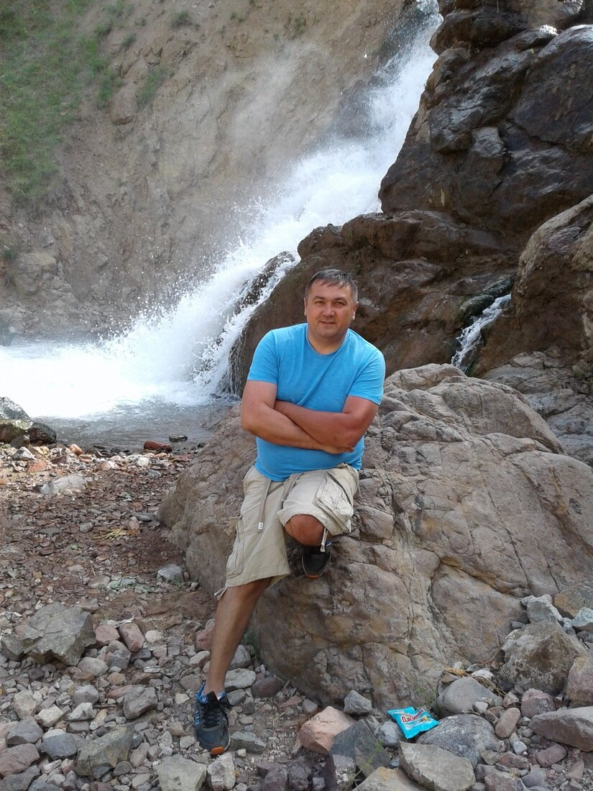
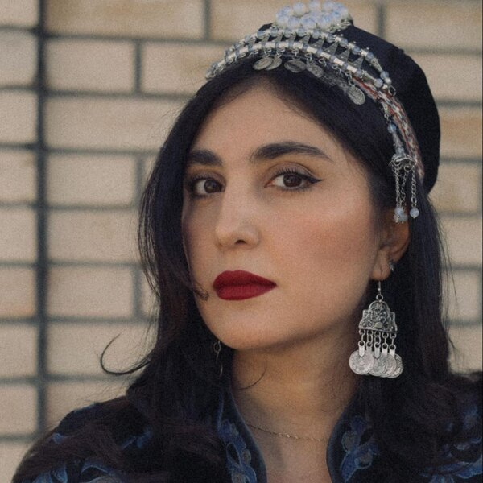
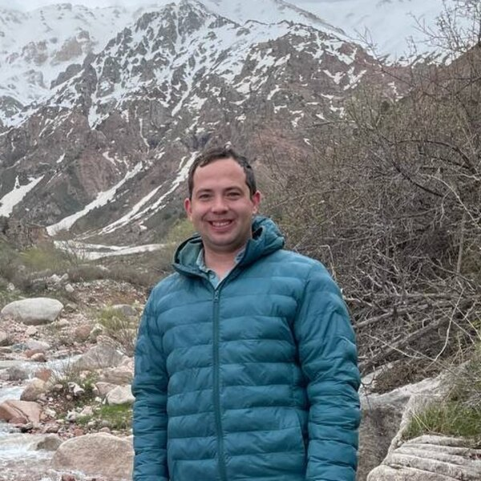
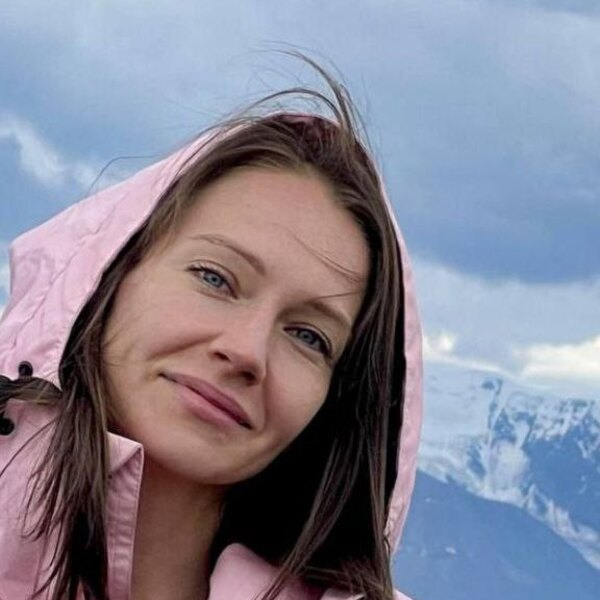

Un tour es tan bueno como la persona que lo guía.
Nuestros guías no son empleados que recitan un guion. Son expertos locales que han pasado años conociendo cada capa de este país (su historia, su arquitectura, su gastronomía, sus historias) porque lo aman de verdad. Te presentamos al equipo.

Idiomas: inglés, ruso, uzbeko
Especialidades: Taskent, Samarcanda, Bujará, tours de varios días, gastronomía y cultura · 21 años en el turismo · valoración de 5★ en Tripster
Bienvenido a Uzbekistán.
Soy Mahmud, aunque la mayoría de los visitantes me llaman Mikhail. Nací y crecí en Taskent, y he pasado toda mi vida descubriendo lo que hace tan especial a este país: su historia llena de capas, su impresionante arquitectura, sus paisajes salvajes y una comida que te sorprenderá de verdad.
Me hice guía porque no podía dejar de hablar de este lugar. Cada calle de Samarcanda, cada plato de una cocina familiar, cada caravasar en ruinas tiene una historia que merece ser contada, y me he propuesto conocerlas todas.
Lo que más me importa es que te lleves algo auténtico. No solo fotos, sino una conexión con el lugar. Así que, tanto si paseamos por un bazar como si nos sentamos a comer un buen plov, me aseguraré de que entiendas lo que estás viendo y por qué importa.
¡Empecemos!

Idiomas: ruso, inglés, español
Especialidades: Taskent, Samarcanda, Bujará, Kokand, Tian Shan y región de Taskent
Sarvinoz es una guía joven y carismática cuyo nombre se ha convertido en sinónimo de experiencias de viaje únicas por todo Uzbekistán. Su experiencia abarca desde la histórica Taskent hasta las majestuosas Samarcanda y Bujará, desde la encantadora Kokand hasta las misteriosas alturas de las montañas de Tian Shan. Combina con naturalidad un profundo conocimiento de la cultura y la historia de la región con una auténtica pasión por compartir esa riqueza con cada viajero.
Sarvinoz empieza cada tour en pleno corazón de la capital, en la plaza de Khast Imam, donde comparte la historia milenaria de la ciudad: un lugar donde la arquitectura islámica, el legado soviético y los edificios contemporáneos conviven lado a lado.
En Samarcanda transmite el ambiente único de la ciudad al pasar por la legendaria plaza del Registán: «Cada piedra de Samarcanda es como una página de un libro antiguo». En Bujará, los guías veteranos del equipo cuentan historias de antiguos caravasares que un día estuvieron conectados con la Gran Ruta de la Seda, y Kokand luce sus palacios históricos y su rico pasado como centro de intercambio cultural y comercial.
Cuando el viaje lleva al Tian Shan, los tours se convierten en verdaderas aventuras entre picos impresionantes, llenas de historias sobre las tradiciones locales y el profundo vínculo entre las personas y la naturaleza. En los valles y las verdes colinas de la región de Taskent, presenta a los viajeros a artesanos que mantienen vivos los oficios de sus antepasados.
Cada tour con Sarvinoz es más que un paseo guiado: es la oportunidad de formar parte de algo más grande.

Idiomas: inglés, uzbeko, ruso
Especialidades: Taskent, Samarcanda, Bujará · centros artesanos de Parkent, Kokand y Rishtán
Konstantin es un guía experimentado que recorre buena parte de Uzbekistán y está especializado en los corredores históricos de Taskent, Samarcanda y Bujará, así como en los centros artesanos de Parkent, Kokand y Rishtán. Nacido en Uzbekistán, domina como nadie la historia y la cultura de la región. Sus tours no son simples excursiones turísticas, sino relatos profundamente inmersivos que combinan conocimiento arquitectónico con una mirada cultural de primera mano.
Konstantin es conocido por su enfoque intuitivo: adapta cada itinerario a las curiosidades concretas de sus viajeros. Domina las rutas clásicas, pero lo que de verdad le enorgullece es descubrir las joyas ocultas y los rincones tranquilos del país que siguen lejos de los circuitos habituales.
Para Konstantin, guiar es un arte. Crea viajes en los que la historia se siente, no solo se escucha, y convierte a cada viajero de observador en participante de la cultura local.

Idiomas: ruso, inglés
Especialidades: Tian Shan occidental · senderismo de montaña · esquí y clases de esquí
Elena es guía de montaña profesional e instructora de esquí, originaria de Taskent. Su vida es una aventura continua de cumbres majestuosas y descensos emocionantes, y le encanta compartir la belleza salvaje del Tian Shan occidental con cualquiera que esté listo para descubrirla.
Desde primera hora de la mañana, cuando los primeros rayos de sol tocan las cumbres nevadas, Elena ya está en marcha, guiando a los viajeros por algunas de las rutas más bonitas de la región: pasos nevados, laderas boscosas y los misteriosos cañones del Tian Shan occidental. Conoce este terreno a la perfección y, tanto si va con aventureros experimentados como con principiantes absolutos, se entrega a que cada día sea inolvidable.
Elena trabaja codo con codo con otros guías, instructores y vecinos de la zona para que cada viajero se sienta seguro e inspirado, y siempre está ahí en los tramos más técnicos. En las pistas se convierte en instructora y explica con facilidad cómo mantener el equilibrio, leer el terreno y disfrutar de la emoción de la velocidad. «Esquiar no es solo un deporte, es una forma de vivir la verdadera libertad», dice. «Lo esencial es no tener miedo, sino confiar en uno mismo».
Por el camino comparte historias sobre las tradiciones de montaña locales y sobre picos que llevan milenios guardando sus secretos. Con Elena, las montañas no son solo rutas en un mapa: son historias que querrás vivir una y otra vez.
Cuéntanos con quién te gustaría viajar y qué quieres ver.
Planear mi viaje